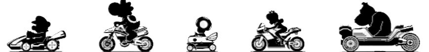
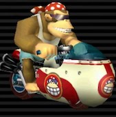
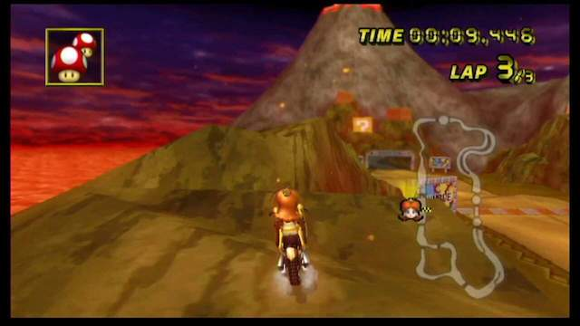

MARIO KART WII WORLD RECORDS


Mario Kart Wii nowadays if at all is known for its speed runs and ultra shortcuts. speedruns of the entire game or just a single course consist of completing the track or game in the shortest amount of time possible. as of today, 21 out of the 32 tracks all use the character funky kong due to him having the highest speed stat in the game. all of the speed runs using funky kong also use one of either of these two bikes below. The reason for using bikes is because of the ability to do a wheelie which gives you a bigger boost in speed which karts do not have. So bikes in general are better than a kart. back to these 2 bikes the first one the flame runner is the second-fastest bike in the game (after the spear) this bike is used for its better handling and drift stat over the spear. The spear is the fastest bike in the game and is used for that but also it has a very poor drift stat so on some tracks turns can be quite challenging.


The Ultra shortcut in Mario kart Wii is one of the reasons this game is stilled played today. an ultra shortcut in short is being able to skip a key checkpoint in the race to trick the game into completing a lap. this is done by how checkpoints work. Checkpoints load the one in front of you and the one previous so if you don't go past the first checkpoint and somehow make it around to go through the last checkpoint the gam thinks you are completing a lap. The most famous example of this is in grumble volcano (below)right from the start of the track you can hop onto a rock and you can drive around the rock to go through the last checkpoint in the game and do this 2 other times to complete the race. during my time of playing, I have managed to beat the course in 40 seconds vs my non-ultra shortcut race in 1:40 seconds. not every track in the game has an ultra shortcut but 14 out of the 32 tracks have an ultra shortcut done by a human. I say human because 6 of the other tracks have been done but involve techniques that a human cant pull off like pressing a button every single frame.
